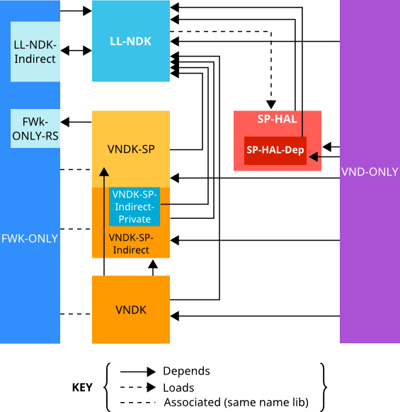

The VNDK definition tool helps vendors migrate their source tree to an Android O environment. This tool scans binary files in the system and vendor images then resolves dependencies. Based on the module dependency graph, the tool can also detect violations to VNDK concepts and provide insight/suggestions for moving modules between partitions. If an AOSP system image is specified, the VNDK definition tool can compare your system image with the AOSP system image and determine the extended libraries.
This section covers three frequently used commands for the VNDK definition tool:
vndk. Compute VNDK_SP_LIBRARIES, VNDK_SP_EXT_LIBRARIES, and
EXTRA_VENDOR_LIBRARIES for build system workaround in Android O.check-dep. Check the violating module dependencies from vendor
modules to non-eligible framework shared libraries.deps. Print the dependencies between the shared libraries and
executables.For more details on advanced command usage, refer to README.md file in the VNDK Definition Tool repository.
The vndk subcommand loads the shared libraries and executables
from the system partition and vendor partitions, then resolves module
dependencies to determine the libraries that must be copied to
/system/lib[64]/vndk-sp and /vendor/lib[64]. Options
for the vndk subcommand include:
| Option | Description |
|---|---|
--system
|
Point to a directory containing the files that will reside in the system partition. |
--vendor
|
Point to a directory containing the files that will reside in a vendor partition. |
--aosp-system
|
Point to a directory containing the files that will reside in the AOSP system image. |
--load-extra-deps
|
Point to a file that describes the implicit dependencies, such as
dlopen().
|
For example, to compute the VNDK library sets, run the following
vndk subcommand:
./vndk_definition_tool.py vndk \
--system ${ANDROID_PRODUCT_OUT}/system \
--vendor ${ANDROID_PRODUCT_OUT}/vendor \
--aosp-system ${ANDROID_PRODUCT_OUT}/../generic_arm64_ab/system\
--load-extra-deps dlopen.dep
Specify extra dependencies with a simple file format. Each line represents a relationship, with the file before the colon depending on the file after the colon. For example:
/system/lib/libart.so: /system/lib/libart-compiler.so
This line lets the VNDK definition tool know that libart.so
depends on libart-compiler.so.
VNDK definition tool lists libraries and corresponding install directories for the following categories:
| Category | Directory |
|---|---|
| vndk_sp | Must install to /system/lib[64]/vndk-sp
|
| vndk_sp_ext | Must install to /vendor/lib[64]/vndk-sp
|
| extra_vendor_libs | Must install to /vendor/lib[64]
|
After gathering outputs from VNDK definition tool, a vendor can create an
Android.mk and fill in VNDK_SP_LIBRARIES,
VNDK_SP_EXT_LIBRARIES and EXTRA_VENDOR_LIBRARIES to
automate the process to copy libraries to the designated installation
destination.
ifneq ($(filter $(YOUR_DEVICE_NAME),$(TARGET_DEVICE)),)
VNDK_SP_LIBRARIES := ##_VNDK_SP_##
VNDK_SP_EXT_LIBRARIES := ##_VNDK_SP_EXT_##
EXTRA_VENDOR_LIBRARIES := ##_EXTRA_VENDOR_LIBS_##
#-------------------------------------------------------------------------------
# VNDK Modules
#-------------------------------------------------------------------------------
LOCAL_PATH := $(call my-dir)
define define-vndk-lib
include $$(CLEAR_VARS)
LOCAL_MODULE := $1.$2
LOCAL_MODULE_CLASS := SHARED_LIBRARIES
LOCAL_PREBUILT_MODULE_FILE := $$(TARGET_OUT_INTERMEDIATE_LIBRARIES)/$1.so
LOCAL_STRIP_MODULE := false
LOCAL_MULTILIB := first
LOCAL_MODULE_TAGS := optional
LOCAL_INSTALLED_MODULE_STEM := $1.so
LOCAL_MODULE_SUFFIX := .so
LOCAL_MODULE_RELATIVE_PATH := $3
LOCAL_VENDOR_MODULE := $4
include $$(BUILD_PREBUILT)
ifneq ($$(TARGET_2ND_ARCH),)
ifneq ($$(TARGET_TRANSLATE_2ND_ARCH),true)
include $$(CLEAR_VARS)
LOCAL_MODULE := $1.$2
LOCAL_MODULE_CLASS := SHARED_LIBRARIES
LOCAL_PREBUILT_MODULE_FILE := $$($$(TARGET_2ND_ARCH_VAR_PREFIX)TARGET_OUT_INTERMEDIATE_LIBRARIES)/$1.so
LOCAL_STRIP_MODULE := false
LOCAL_MULTILIB := 32
LOCAL_MODULE_TAGS := optional
LOCAL_INSTALLED_MODULE_STEM := $1.so
LOCAL_MODULE_SUFFIX := .so
LOCAL_MODULE_RELATIVE_PATH := $3
LOCAL_VENDOR_MODULE := $4
include $$(BUILD_PREBUILT)
endif # TARGET_TRANSLATE_2ND_ARCH is not true
endif # TARGET_2ND_ARCH is not empty
endef
$(foreach lib,$(VNDK_SP_LIBRARIES),\
$(eval $(call define-vndk-lib,$(lib),vndk-sp-gen,vndk-sp,)))
$(foreach lib,$(VNDK_SP_EXT_LIBRARIES),\
$(eval $(call define-vndk-lib,$(lib),vndk-sp-ext-gen,vndk-sp,true)))
$(foreach lib,$(EXTRA_VENDOR_LIBRARIES),\
$(eval $(call define-vndk-lib,$(lib),vndk-ext-gen,,true)))
#-------------------------------------------------------------------------------
# Phony Package
#-------------------------------------------------------------------------------
include $(CLEAR_VARS)
LOCAL_MODULE := $(YOUR_DEVICE_NAME)-vndk
LOCAL_MODULE_TAGS := optional
LOCAL_REQUIRED_MODULES := \
$(addsuffix .vndk-sp-gen,$(VNDK_SP_LIBRARIES)) \
$(addsuffix .vndk-sp-ext-gen,$(VNDK_SP_EXT_LIBRARIES)) \
$(addsuffix .vndk-ext-gen,$(EXTRA_VENDOR_LIBRARIES))
include $(BUILD_PHONY_PACKAGE)
endif # ifneq ($(filter $(YOUR_DEVICE_NAME),$(TARGET_DEVICE)),)
The check-dep subcommand scans vendor modules and checks their
dependencies. If it detects violations, it prints the violating dependant
library and symbol usages:
./vndk_definition_tool.py check-dep \
--system ${ANDROID_PRODUCT_OUT}/system \
--vendor ${ANDROID_PRODUCT_OUT}/vendor \
--tag-file eligible-list.csv \
--module-info ${ANDROID_PRODUCT_OUT}/module-info.json \
1> check_dep.txt \
2> check_dep_err.txt
For example, the following sample output shows a violating dependency from
libRS_internal.so to libmediandk.so:
/system/lib/libRS_internal.so
MODULE_PATH: frameworks/rs
/system/lib/libmediandk.so
AImageReader_acquireNextImage
AImageReader_delete
AImageReader_getWindow
AImageReader_new
AImageReader_setImageListener
Options for the check-dep subcommand include:
| Option | Description |
|---|---|
--tag-file
|
Must refer to an eligible library tag file (described below), which is a Google-provided spreadsheet that described categories of framework shared libraries. |
--module-info
|
Points to the module-info.json generated by Android build
system. It helps the VNDK definition tool associate binary modules with source
code.
|
Google provides an eligible VNDK spreadsheet (e.g.
eligible-list.csv) that tags the framework shared libraries that
can be used by vendor modules:
| Tag | Description |
|---|---|
| LL-NDK | Low-level NDK libraries that can be used by both framework and vendor modules. |
| LL-NDK-Indirect | Private dependencies of LL-NDK libraries. Vendor modules must not access these libraries directly. |
| SP-NDK | Same-process NDK libraries that can be used by both framework and vendor modules. |
| SP-NDK-Indirect | Private dependencies of SP-NDK libraries. Vendor modules must not access these libraries directly. |
| VNDK-SP | SP-HAL framework shared libraries dependencies. |
| VNDK-SP-Indirect | VNDK-SP dependencies that are not directly accessible to SP-HAL, but can be accessed by other vendor modules (except SP-HAL and SP-HAL-Dep) |
| VNDK-SP-Indirect-Private | VNDK-SP dependencies that are not directly accessible to all vendor modules. |
| VNDK | Framework shared libraries that are available to vendor modules (except SP-HAL and SP-HAL-Dep). |
| FWK-ONLY | Framework-only shared libraries that must not be accessed by vendor modules (neither directly nor indirectly). |
| FWK-ONLY-RS | Framework-only shared libraries that must not be accessed by vendor modules (except for RS usages). |
The following table describes tags used for vendor shared libraries:
| Tag | Description |
|---|---|
| SP-HAL | Same-process HAL implementation shared libraries. |
| SP-HAL-Dep | SP-HAL vendor shared libraries dependencies (a.k.a. SP-HAL dependencies excluding LL-NDK, SP-NDK, and VNDK-SP) |
| VND-ONLY | Framework-invisible shared libraries that must not be accessed by framework modules. The copied extended VNDK libraries will be tagged as VND-ONLY as well. |
Relationships between tags:
To debug the library dependencies, the deps subcommand prints
the module dependencies:
./vndk_definition_tool.py deps \
--system ${ANDROID_PRODUCT_OUT}/system \
--vendor ${ANDROID_PRODUCT_OUT}/vendor
The output consists of multiple lines. The line without a tab character starts a new section. The line with a tab character depends on the preceding section. For example:
/system/lib/ld-android.so
/system/lib/libc.so
/system/lib/libdl.so
This output shows that ld-android.so does not have a dependency
and libc.so depends on libdl.so.
When specifying the --revert option, deps
subcommand prints the usages of libraries (reversed
dependencies):
./vndk_definition_tool.py deps \
--revert \
--system ${ANDROID_PRODUCT_OUT}/system \
--vendor ${ANDROID_PRODUCT_OUT}/vendor
For example:
/system/lib/ld-android.so
/system/lib/libdl.so
This output shows that ld-android.so is used by
libdl.so, or in other words, libdl.so depends on
ld-android.so. In addition, this output shows that
libdl.so is the sole user of ld-android.so.
When specifying the --symbol option, the deps
subcommand prints the symbols being used:
./vndk_definition_tool.py deps \
--symbol \
--system ${ANDROID_PRODUCT_OUT}/system \
--vendor ${ANDROID_PRODUCT_OUT}/vendor
For example:
/system/lib/libc.so
/system/lib/libdl.so
android_get_application_target_sdk_version
dl_unwind_find_exidx
dlclose
dlerror
dlopen
dlsym
This output shows that libc.so depends on 6 functions exported
from libdl.so. If both the --symbol option and
--revert option are specified, the symbols used by the user
will be printed.